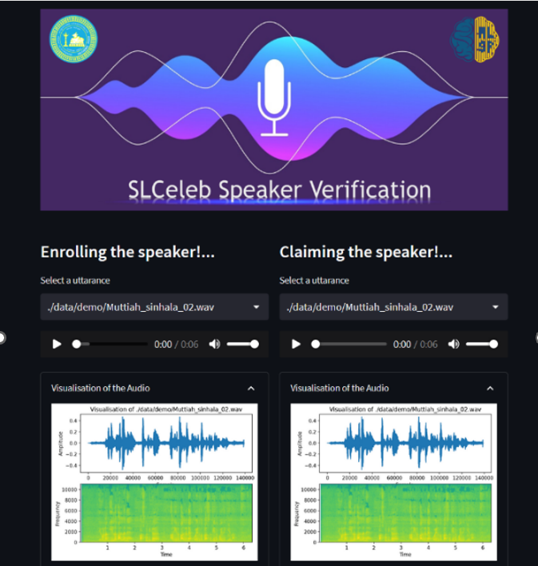
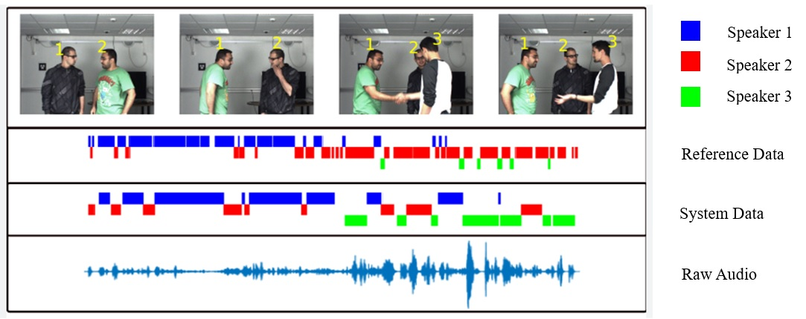
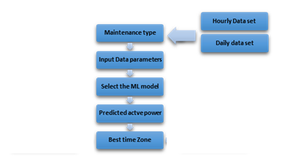

Developing Speaker Verification Technology for Practical Applications

Speaker verification, a biometric identifier, determines whether an input speech belongs to the claimed identity.
This technology is applicable in over-the-phone secure access in call centers, credit card verification, voice-based signatures, entry control to restricted premises, and suspect identification by voice in crime scenes.
We built a deep learning based system capable of identifying the speaker regardless of the text the person is speaking, coping with several challenges such as background noises, short utterances and variations in recording quality.
Automatic Speaker Profiling Systems

A speaker profiling system refers to a technology that can discern a speaker's physical attributes based on a brief speech sample.
This system has the capability to make educated estimations regarding unfamiliar speakers, including aspects like gender, age, as well as their body weight and height.
To develop and assess the system, the TIMIT dataset was employed to train a feed-forward neural network.
Forecasting of a solar irradiance and photovoltaic power generation using deep learning approaches

The field of photovoltaic (PV) energy has witnessed significant growth in its contribution to electricity generation.
Various factors, particularly weather-related variables, play a crucial role in influencing the performance of PV systems.
The amount of solar irradiance varies depending on meteorological conditions, leading to fluctuations in solar power production.
In many instances, it becomes imperative to have a clear understanding of the anticipated solar power output based on historical data collected by monitoring stations.
Thus, the historical records of solar irradiance and weather data become pivotal in creating an accurate solar forecasting model and establishing a financially successful solar power plant.
The data used in this study was obtained from the solar measurement station at the Faculty of Engineering, University of Jaffna.
Electricity Load/demand Forecasting in Sri Lanka using Deep Learning Techniques

In many cases, electricity cannot be stockpiled but must be produced promptly when required.
Consequently, forecasting electricity demand is a crucial element in the strategic planning of the electricity sector and the efficient operation of power grids.
To address this need, machine learning and deep learning methods were introduced for forecasting the electricity demand in the Sri Lankan context.
The dataset used for this purpose comprises ten years' worth of historical demand data from Sri Lanka, sourced from the Ceylon Electricity Board's (CEB) system control center.

We have created a conversational AI system capable of comprehending and responding to inquiries from customers who speak Tamil and Sinhala languages and seek assistance from the telecommunications company.
This AI solution has the potential to alleviate and decrease the number of calls directed to the customer call center.
Additionally, we have designed an Automatic Speech Recognition (ASR) system that can accurately and swiftly transform user voice input into text.
Furthermore, we've implemented intent classification using cutting-edge natural language processing techniques to link textual information and expressions to specific intentions.
Lastly, the system is capable of converting text back into spoken language.
Developing Speaker Diarization Technology for Practical Applications

Speaker diarization, a task widely known as determining “who spoke when” in a multi-speaker conversation, labels speech signals with classes corresponding to speaker identities.
Typical applications of speaker diarization include meeting conversation analysis, speech recognition with speaker identification, and multi-media information retrieval.
We built deep learning based speaker diarization systems, coping with several challenges such as background noise, overlapping speeches, number of speakers is not hardcoded, and frequent Speaker turns.
Drowsiness Detection of Drivers in Vehicles

Drowsiness and fatigue constitute significant factors contributing to road accidents, with profound consequences for road safety.
Consequently, the detection of driver drowsiness has emerged as a critical focus area for preventing a substantial number of accidents caused by sleep-induced impairment.
To address this concern, a driver drowsiness detection system was devised using a Convolutional Neural Network (CNN) based approach, with the NTHU dataset serving as the foundation for training the system.
Scheduling of Wind Turbine Maintenance using Machine Learning Approaches

Wind turbine maintenance scheduling is an important area in renewable energy due to the increasing demand for clean and sustainable sources of energy.
This work uses the wind plant data of Pollupalai and Vallimunai Wind Farm.
The following machine learning models, SVM, ARIMA, RNN, XGBoost, KNN, LSTM, MLP, and Gradient Boost were trained to predict the wind power outputs and schedule the wind turbine maintenance.
IOT based Portable Emission Measurement System

Environmentalists are currently grappling with the significant issue of air pollution stemming from vehicle emissions.
The health hazards associated with air pollution are profoundly concerning.
To address this problem, we've created a lightweight and portable emission testing device based on IoT technology, enabling on-the-spot tests at any given time.
This device also possesses the ability to maintain a comprehensive database system for the vehicles it tests.
IoT Based Health Monitoring System

We have introduced an IoT-driven Health Monitoring System, designed to enable remote monitoring of a patient's health information, with the capacity to transmit this data to a cloud-based platform.
Additionally, the system offers a mobile application for visualizing these health parameters.
Furthermore, our research includes a method for classifying Electrocardiogram (ECG) arrhythmias.
We employ a 2D convolutional neural network (CNN) to process the ECG signal obtained from our prototype.
For this classification task, we have chosen the Residual Neural Network.